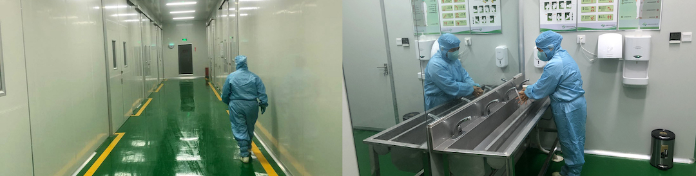
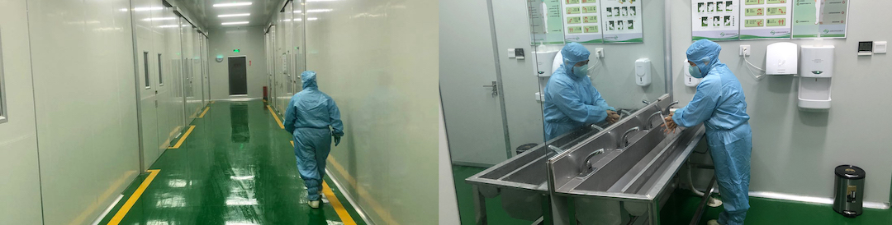

生产流程
专属的有机农场，先进加工装备，科学的工艺保证我司可以生产符合国际标准认证的产品。
有机苗粉等工艺流程
有机种植——原料（鲜苗）——分拣去杂——清洗——切段——清洗——漂烫——冷却——去浮水——二次干燥——粗粉碎——半成品——混配——超微粉碎——振动筛检测细度——HTST灭菌——振动筛检测细度——包装——金属探测——成品检验入库
有机汁粉工艺流程
有机种植——原料（鲜苗）——分拣去杂——清洗——切段——清洗——去浮水——打浆取汁——过滤——配料——喷雾干燥——灭菌——金属探测——包装——成品检验入库